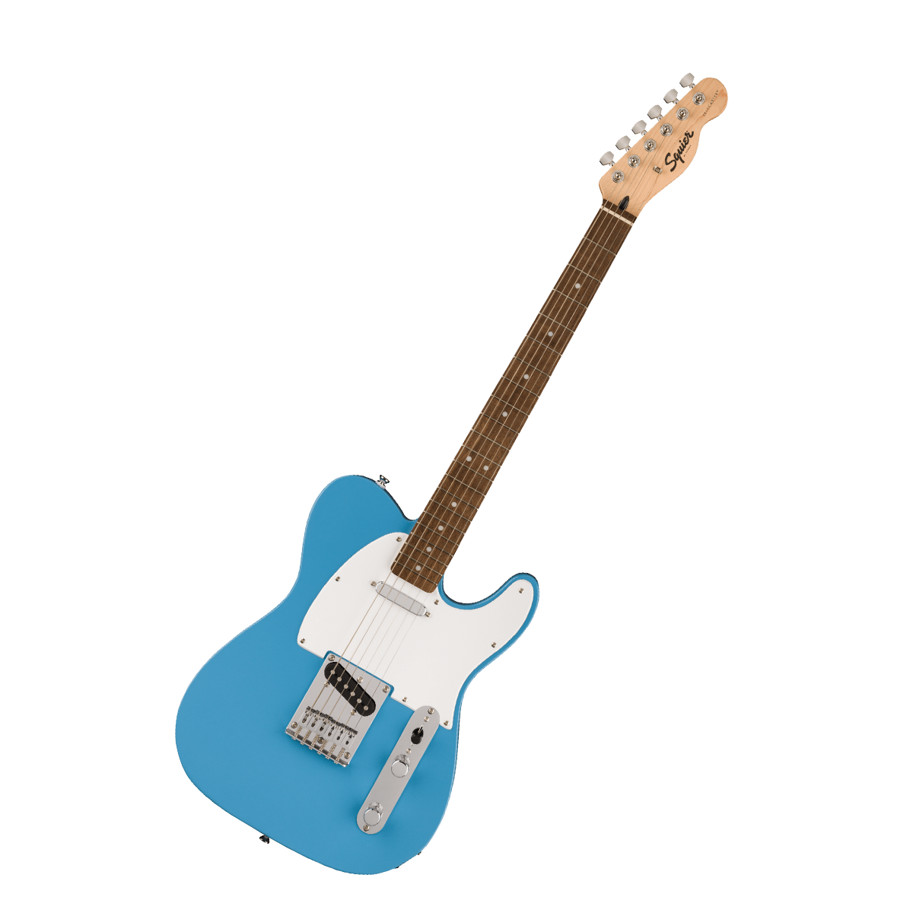

La Fender Telecaster es una guitarra eléctrica emblemática conocida por su simplicidad y robustez. Su cuerpo de aliso o fresno y su diseño sólido ofrecen durabilidad y un tono resonante. Equipada con dos pastillas de una sola bobina, proporciona un sonido claro y contundente, con un ataque brillante y una definición excepcional. Su mástil de arce o palisandro, junto con un diapasón de 21 o 22 trastes, asegura una experiencia de juego cómoda y precisa. Con su diseño de corte simple y su puente de cuerda a través del cuerpo, la Telecaster es muy apreciada en una variedad de géneros, desde el country hasta el rock, por su sonido característico y su fiabilidad en el escenario.
